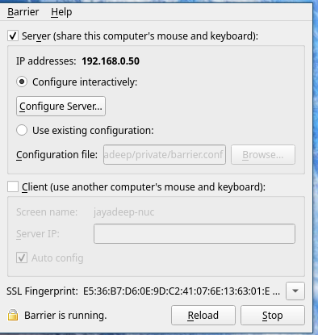
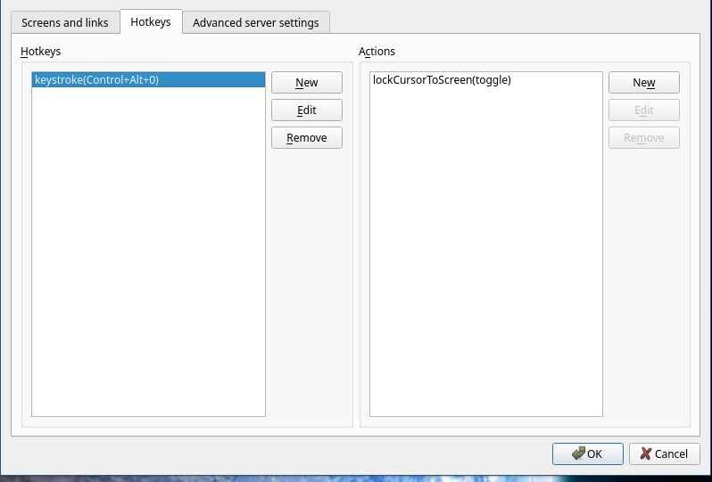

May 5, 2022
My personal work setup consists of a Reddragon K552 mechanical keyboard, a Zebronics RGB Mouse and a 2K display. It isn’t much, but I love working with it. And that’s why I want to reuse the same setup for my office work environment as well. I could buy the same components again and setup another desk, but I prefer a software based approach to tackle this challenge
Initially I thought of buying a KVM switch. But then I found this gem: https://github.com/debauchee/barrier. Let me show you how to configure barrier to share keyboard and mouse over wifi.
First, make sure your main computer has a static IP. Most likely your router has an option to automatically assign a fixed ip to the computer. Or you can set a static ip in network connection setttings.
Then install Barrier from the above link. You can find the installation steps for Linux, windows and Mac.
In my case, it was easy (I’m running Arch linux)
sudo pacman -S barrier
There is one step you need to do to get it to work :- setup ssl certificates. There is a bug in Barrier installation, so barrier doesn’t set it up by default, so I had to dig around and find a way to do it. Here is the github issue corresponding to the same: https://github.com/debauchee/barrier/issues/231
In linux:
cd ~/.local/share/barrier/SSL/
openssl req -x509 -nodes -days 365 -subj /CN=Barrier -newkey rsa:4096 -keyout Barrier.pem -out Barrier.pem
In Mac:
cd /Users/[username]/Library/Application Support/barrier/SSL
openssl req -x509 -nodes -days 365 -subj /CN=Barrier -newkey rsa:4096 -keyout Barrier.pem -out Barrier.pem
Now open barier in the main machine. On barier settings, enable SSL. It doesn’t work without enabling ssl, so I don’t know why this option is disabled in the first place.
Then click on configure server and add a new client. If you know your other machine’s hostname, use that as client name. Drag the client to correct position like how you would configure multiple screens.
On the client machine (you can have multiple clients), install barrier and setup certificates as above. Make sure the client name there matches the client name configured in the main machine, otherwise it won’t connect. Now start the client. The server will ask for verification of the client when it connects for the first time. Then you should be able to move the mouse across both machines. Keyword will work on whichever screen has the mouse active.

Barrier is now ready to use. There is one additional step I have done in my case. I have configured a shortcut to bind the devices to one particular machine. When I’m working entirely on one machine, I don’t want the mouse to accidentally go to other machine and click on something. It can be configured from configure server -> hotkeys

This one is really tricky. I’m currently exploring Miraclecast to cast my mac over wifi to Linux machine. I’ll update this article if I find a good solution. For now, I’m just connecting both devices using multiple cables to the same display and just adjust the source in the monitor whenever I switch to the other device. If you are using windows or mac for both the machines, it might be easier to get it to work.